Construction
For operands  , bit
, bit  :
:
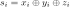
,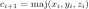
. Then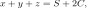
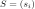
,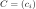
: the sum is kept in redundant form (two words), and no carry propagates. Delay: one full adder, independent of .
.
Adder trees:  operands need
operands need
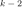
CSA rows. In a chain they cost full-adder delays; in a Wallace tree each level reduces the count by a factor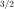
, so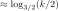
levels. A final carry-propagate adder (ripple or lookahead) gives the result. A plain tree of carry-propagate adders would cost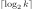
full additions instead.Picture
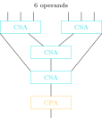
Six operands, three CSA levels, one carry-propagate adder at the end.
Intuition
Postpone the carries: keep the result as "sum plus carries" while more numbers keep coming, and settle the carries once at the end.
Pitfall
The redundant form
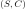
cannot be compared or sign-tested directly; any decision on the value needs the final carry-propagate addition.